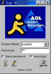
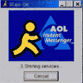
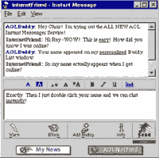
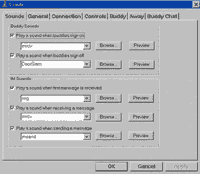
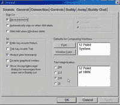
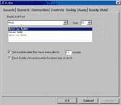
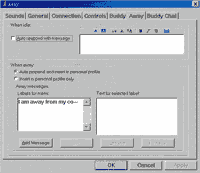

|
|
| 当前位置：电脑报电子版 > 1999 年 > 28 期 > 大众网络 > 别冷落了小黄人AIM |
| 《 别冷落了小黄人AIM 》 |
| AIM(小黄人)即AOL Instant Messenger，是一个速度更快、更方便、更稳定的即时信息及聊天工具，而且是免费的噢！它的界面非常友好简洁，功能强大而实用，有多项自定义设置选项。 目前AIM最新版本为2.0版本，可在Netscape或AOL站点免费下载，下载后解压安装至硬盘即可。下载的同时，你可在该站点注册一个Screen Name，它是可以识别你的唯一名称。Netscape 4.04或以上版本也附带此程序，安装后显示出的小黄人即是AIM，只不过很多朋友没有用过它，目前AIM的用户已达350万。 一、AIM的使用  1.运行时启动画面如图1。这时你在Screen Name/Password 二栏中分别填入你注册的名字、密码，并且可以选择是否保存密码及自动登录（如果选择了自动登录，则每次启动时会自动登录入AOL服务器，开始提供服务）。然后按下标有Sign On的绿色小人即可。 2.在向服务器登录过程中，你会依次看到开始登录、验证、开始服务等画面，如图2所示，如果服务器太忙或网络连接太差，在这一步就会终止，并且有提示框显示不能登录的原因。 3.成功登录后即进入A IM工作界面，如图3。窗口中已经缺省地列出三个类别：Friends——好友；Family——家人；Work——工作伙伴，此时你可以右击其中一类，在菜单中选择添加，键入对方的Screen Name即可，添加后如图4所示，可以选择文件夹前减号将所有名字隐藏起来。所有列表均保存在List Setup一栏中。 4.当你上网时，A IM便会自动跳至Online一栏，列出好友中有几人上网，并以开门声或你自行设定的其它音效通知你，同时任务栏中AIM项会不停地闪烁。  5.开始传送即时信息，当看到好友上线时，你可在Online列表中选择他，如图3所示InternetFriend，然后按左下方单个小人图标即可向他传送信息。缺省的对话框形式如图4，每人一行，各以不同颜色显示，你可以在选项中改变显示方式，比如改成你与朋友各占上方或下方谈话框，也可以加入时间记录。传送信息支持中文及英文方式。如果你加入表情符 或 ，也会变成黄色的小笑脸或小苦脸显示在对话框中。 6.也可在列表中选择好友，向他发出聊天邀请，按左下方几个小人图标即可。 二、AIM的设置 1.声音的设置 ：可以选择好友上线/离线时的通知声，如开门/关门声等，可以选择接收/发送信息时的声响，如图5所示；  2.一般设置（如图6）：设定是否保存密码，是否自动登录等，以及是否加入时间显示，是否允许加入表情符号，以及缺省字体、字号等，你可以自行定义符合自己心意的显示方式。  3.在“连接"选项中可以设置需连接的服务器及端口，一般保留为缺省值即可。 4.在“好友"一栏中设定好友列表字体、字号，上线/离线好友字体、字号等，以及有新消息进入时是否闪烁等。如图7。 5.在“Away"一项中可以设定系统闲置时自动回应的信息以及你暂离时自动回复的信息。可自定义这一段话的内容、颜色、字体、字号等。如图8。 6.在“Buddy Chat"一项中设定好友进入聊天室或离开时是否发出音效，或以闪烁方式等提示你注意。 7.设置好以上选项后，你即可以轻松自如地与好友/家人/工作伙伴在网上快速交流或即时聊天了。 三、AIM主要功能及特点 1.AIM连接及传送即时信息的速度很快，基本上没有延迟； 2.AIM的界面简洁美观，虽然功能没有ICQ多，但它的即时信息、多方Chat功能等都很强大且实用，也是最常用的功能之一；  3.聊天后所有内容都可保存下来，步骤很简单，在信息窗口菜单中“FILE"项中选择保存即可； 4.AIM还提供一个独特的警示功能：如果有人通过AIM向你发送不礼貌或是攻击性信息，你可以选择向其发出警示或屏蔽他，如果你向他发送了警示信息，则他的警告百分率即会上升，随之他发送/接受信息的能力即会下降，若达到顶点则有一段时间不能使用AIM服务。当然，警告在一段时间后会过期。如果选择屏蔽，就不会再收到来自该用户的信息； 5.表情符号，你在BBS或电子邮件中常用的表情符，在AIM中会被自动转化成生动的表情图案。 6.可以对你要发送的文本进行编辑，改字体、字号、字色，是否加入底色、是否显示为超链接等，可直接在发送信息的工具栏中进行，十分方便； 7.提供多人同时即时聊天的功能，可以选择左下方有几个小人的图标邀请其他朋友加入聊天，朋友接受邀请后即可开始，每个人都可以同时看到其他人打在屏幕上的单词及语句不断显示出来； 8.使用同一台电脑的朋友可各自注册自己的Screen Name ，只要启动AIM后在用户名一栏中输入或选择自己的名字/密码后连接即可，大家互不影响； 9.有适用于Win95/98/NT、Macintosh、Unix的不同版本供下载。 怎么样，看到AIM如此快捷简便后，你是不是也想马上下载它呢？快点让这个小黄人也住进你的电脑吧！ 文件大小：1744K 下载地址：ftp://ftp.newaol.com/aim/win95/aim95.exe (Win95/98/NT适用版本) 注册Screen Name 的地址：http://www.aol.com/aim/home.html (广东 张易) |
| 下载本期推荐软件 | 页 首 |
| 《电脑报》版权所有，电脑报网站编辑部设计制作发布 |